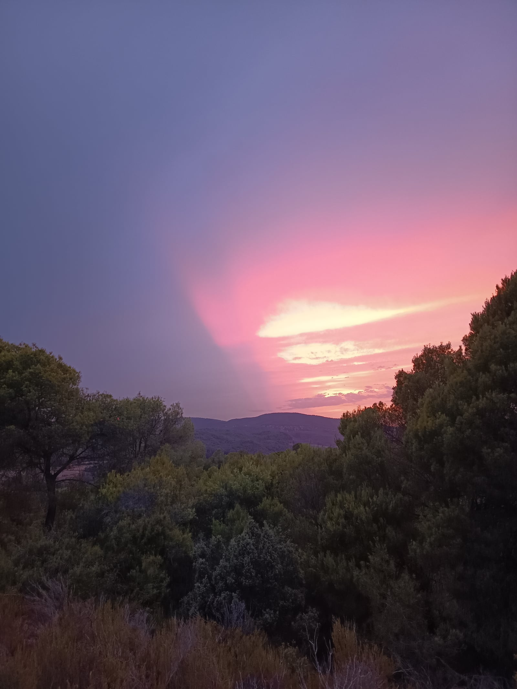

EL CIM DE L'ANY
⌁
Martorell · 2026
Un any.
Una muntanya.
111 vegades.
Del carrer de Dalt a la Torre Griminella. Una hora per sortir de casa, tocar el cim i tornar diferent.
8pujades
103per fer
7%del repte

El repte · Graella Trail
Cada pujada deixa una petjada.
Feta Pendent